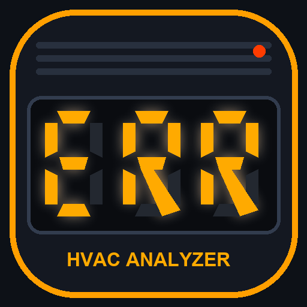
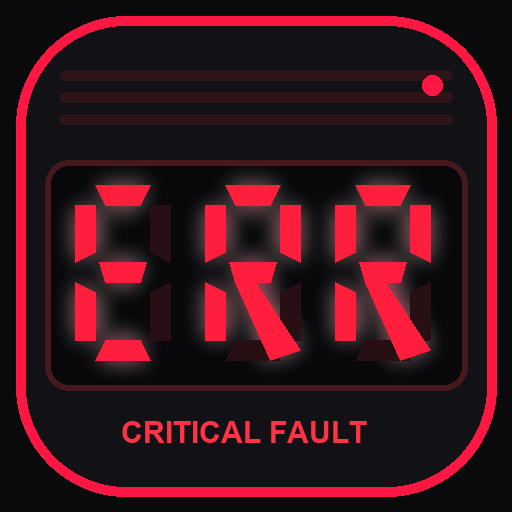
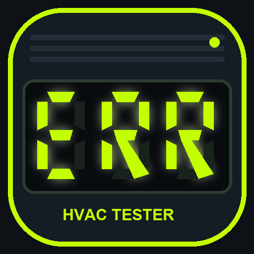
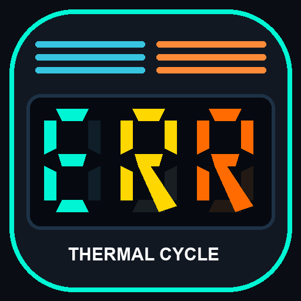
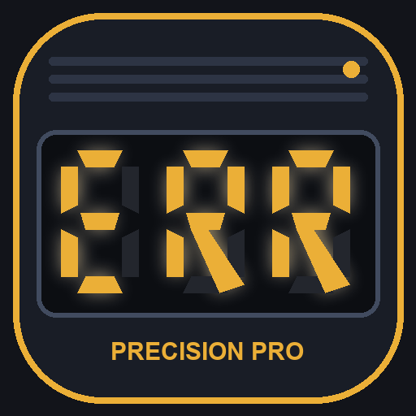
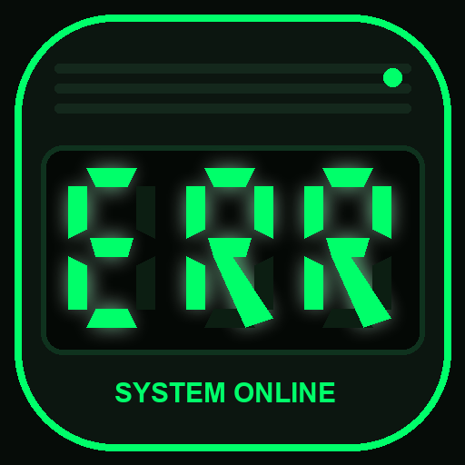
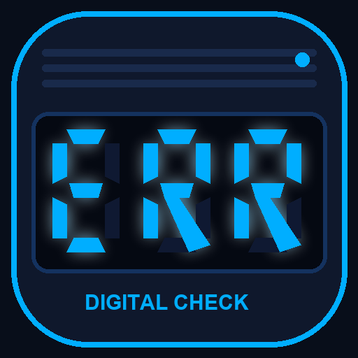
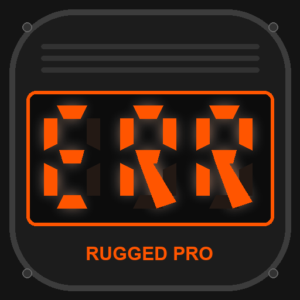
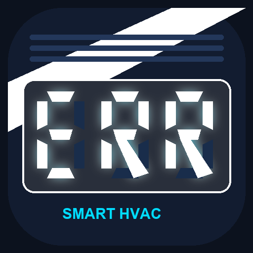
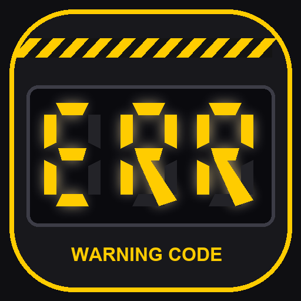

4番の直球エラー表示をベースに、テーマカラー・質感を極限まで高めた10デザイン

PATTERN 01マットグラファイト ＋ ネオンアンバー。フルーク等の工業用高精度テスターを象徴する最高峰カラー。

PATTERN 02漆黒カーボン ＋ 鮮烈なクリムゾンレッド発光。警告ランプの点滅感があり、現場での危機感が一発で伝わる。

PATTERN 03ハイパー蛍光シトロンイエロー。最先端プロ用ハイエンド工具のような雰囲気で、暗所視認性が圧倒的。

PATTERN 04冷気フロストシアン ＋ 温風サーマルオレンジ。空調（冷暖房）のサイクル二面性を美しく表現したデザイン。

PATTERN 05重厚なチタン ＋ 上質な真鍮ゴールド。高級計測機器のような風格と落ち着きを兼ね備えたプロ仕様。

PATTERN 06エレクトリック・ターミナルグリーン。旧型空調集中コントローラやオシロスコープの蛍光表示管（VFD）をオマージュ。

PATTERN 07精密電子ブルー ＋ ディープネイビー。ダイキンやパナのクリーン空調を想起させる、知的で洗練された電子デザイン。

PATTERN 08G-SHOCKやCAT重機のような無骨なガンメタルボルトベゼル ＋ ミリタリー調マットオレンジ。タフな現場に最適。

PATTERN 09半透明すりガラス風アクリルパネル ＋ ネオンシアン。モダンなスマホアプリのトレンドを取り入れたハイエンド感。

PATTERN 10上部にイエロー＆ブラックの警戒斜めストライプ。プラントや機械室の危険区域のような圧倒的インパクト。